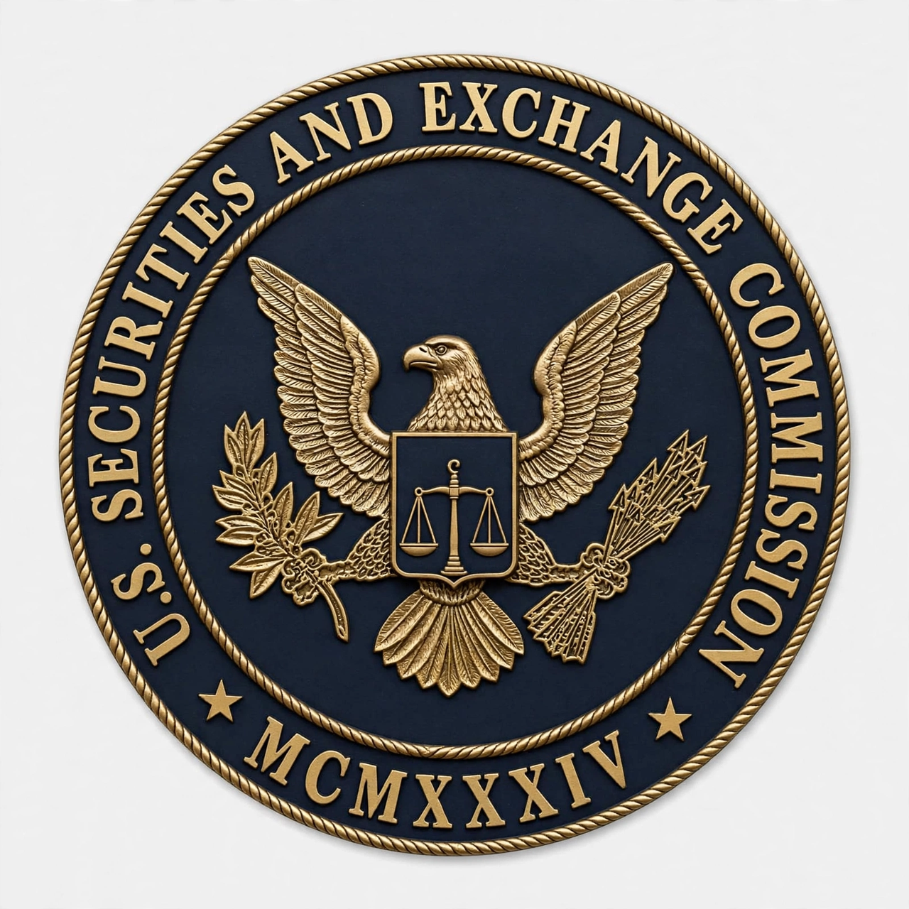

The U.S. Securities and Exchange Commission (SEC) is an independent agency of the United States federal government charged with enforcing federal securities laws, proposing securities rules, and regulating the securities industry, the nation's stock and options exchanges, and other activities and organizations, including the electronic securities markets. It was created by the Securities Exchange Act of 1934 in the aftermath of the Wall Street Crash of 1929.
| U.S. Securities and Exchange Commission | |
|---|---|
 Seal of the SEC | |
| Formed | 6 June 1934 |
| Headquarters | Washington, D.C. |
| Agency type | Independent federal agency |
| Leadership | Five commissioners appointed by the President; one serves as Chair |
| Parent laws | Securities Act of 1933; Securities Exchange Act of 1934 |
Before the 1930s, securities regulation in the United States was left mainly to the states under so-called "blue sky laws". The stock market crash of 1929 and the ensuing Great Depression prompted Congress to investigate market abuses through the Pecora Commission hearings, which exposed insider trading, stock manipulation, and misleading disclosure. The Securities Act of 1933 — the first major federal law to regulate the offering and sale of securities — required issuers to register offerings and disclose material financial information. The Securities Exchange Act of 1934 created the SEC to enforce the new regime and regulate exchanges and broker-dealers. Joseph P. Kennedy, father of future President John F. Kennedy, was appointed the first chairman. William O. Douglas, who later served on the Supreme Court, was another influential early chair.
The SEC describes its mission as protecting investors, maintaining fair, orderly, and efficient markets, and facilitating capital formation. The agency is headed by five commissioners appointed by the President with the advice and consent of the Senate; no more than three may belong to the same political party. One commissioner is designated Chair, the agency's top executive. The SEC's staff, numbering several thousand, is organized into divisions including Corporation Finance, Enforcement, Investment Management, Economic and Risk Analysis, and Trading and Markets. Regional offices across the country conduct examinations and enforcement work.
Companies offering securities to the public must register them and file periodic reports — annual reports on Form 10-K, quarterly reports on Form 10-Q, and current reports on Form 8-K — which are publicly available through the SEC's EDGAR database. Public companies, mutual funds, investment advisers, brokers, dealers, and exchanges are all subject to SEC oversight.
The Division of Enforcement investigates violations such as insider trading, accounting fraud, false or misleading statements, Ponzi schemes, and market manipulation, and can bring civil actions in federal court or administrative proceedings. Notable enforcement targets have included Enron-era accounting frauds, the Ponzi scheme of Bernard Madoff, and numerous insider trading cases.
The SEC writes rules under the securities laws, including major post-crisis rules under the Dodd–Frank Wall Street Reform and Consumer Protection Act of 2010 and the JOBS Act of 2012, and oversees self-regulatory organizations such as FINRA and the national securities exchanges.
The SEC has been criticized for failures including missing Madoff's fraud despite repeated warnings, perceived revolving-door relationships with the financial industry, and debates over the scope of its rulemaking on topics such as climate-related disclosure and cryptocurrency markets. Reform proposals have periodically sought to change its structure or funding.
From Wikipedia, the free encyclopedia (recreated from memory).